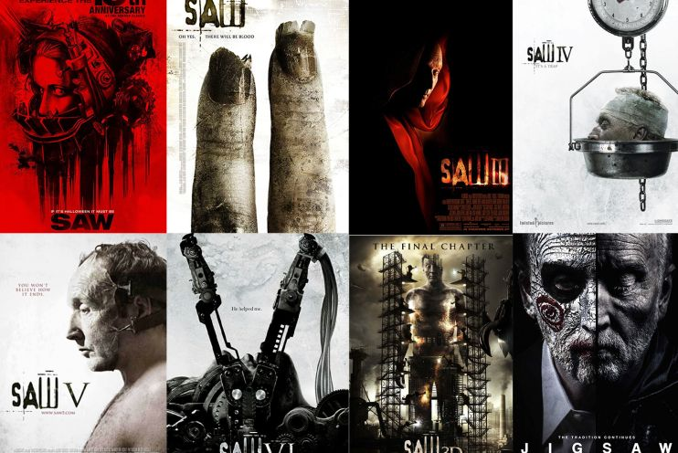

映画紹介

ミッションインポッシブル デッドレコニング
公開年: 2023年7月21日
ジャンル: アクションスパイ
監督: クリストファー・マッカリー
出演者: トム・クルーズ, ヘイリー・アトウェル, レベッカ・ファーガソン, ヴァネッサ・カービー, ポム・クレメンティエフ, イーサイ・モラレス, サイモン・ペッグ, ヴィング・レイムス
CIAの中でも特殊な任務を遂行するIMF所属の凄腕スパイ“イーサン・ハント”は、裏切り者の汚名を晴らすため、自ら本当の裏切り者を暴き出す。 トム・クルーズが製作と主演を務めた娯楽性の高いスパイ・アクション。 興行的に成功し、シリーズ化された。

saw シリーズ
公開年: 2004年10月29日（日本）
ジャンル：ホラー
監督: ジェームズ・ワン
出演者: ケイリー・エルウィス, リー・ワネル, ダニー・グローヴァー, ケン・レオン, ディナ・メイヤー, トビン・ベル
『ソウ』（Saw）は2004年のアメリカのホラー映画。この作品では、生き延びるために肉体的な苦痛を与える「ゲーム」で犠牲者の生きる力を試す「ジグソウ・キラー」の謎を軸に、非線形の物語が展開される作品になっています。